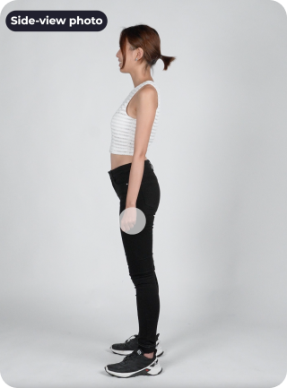

PREPARATION
CAMERA SETTING
POSITION



- Wear simple & close-fitting
clothes - Tie up your long hair & show
your neck
- Keep your device vertical
- 3-5 meters between the device
and subjects - Locate at the waist level
- Make sure the subjects' body
is inside the camera
- Open your arms around 15-30°
- Make a fist
- Keep your feet around
shoulder-width
- Turn left 90 degree & arm drop
naturally to your sides - Tiptoes facing forward and look
ahead